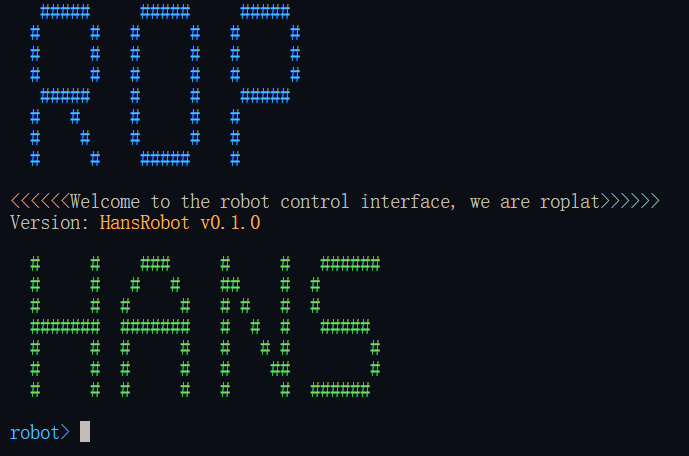

外设 - 驱动 - Hans
测试用机器人采用 S30
大族机器人驱动是经典的复杂指令驱动，其中包含了诸多功能。驱动的开发人员似乎不是同一人并且没有提前约定好接口规范，导致驱动的接口风格并不是很统一，公司提供的样例也并非全面，这给使用带来了一些困难。
为了将 HANS 机器人也纳入 Roplat 的处理范围，我们完全重构了 HANS 机器人的驱动，使其接口风格与其他驱动保持一致。
Interface
API(Application Programming Interface ,应用程序接口)
各种语言的 API 尽量以面向对象的形式提供一个可供调用的对象，这使得对于机器人的操作以对象的方法形式存在，
要使用各语言的 API 需要添加依赖，依赖的添加方式随您当前正在使用的语言有关
打开项目根目录中的 cargo.toml, 在 [dependencies] 中添加依赖 "libhans" = "0.1.0"
在命令行中运行 pip install libhans, 在需要使用的脚本文件中使用import libhans.libhans即可
和其他机器人的驱动一致，大族机器人驱动的对外接口也来自于一个 Rust 特征，这对应其他面向语言中一个不具备数据元素的基类,具体的方法解释见机械臂指令。方法声明如下：
pub trait RobotBehavior {
fn version(&self) -> String;
fn init(&mut self) -> RobotResult<()>;
fn shutdown(&mut self) -> RobotResult<()>;
fn enable(&mut self) -> RobotResult<()>;
fn disable(&mut self) -> RobotResult<()>;
fn reset(&mut self) -> RobotResult<()>;
fn is_moving(&mut self) -> bool;
fn stop(&mut self) -> RobotResult<()>;
fn resume(&mut self) -> RobotResult<()>;
fn emergency_stop(&mut self) -> RobotResult<()>;
fn clear_emergency_stop(&mut self) -> RobotResult<()>;
}
pub enum MotionType<const N: usize> {
Joint([f64; N]),
JointVel([f64; N]),
CartesianQuat(na::Isometry3<f64>),
CartesianEuler([f64; 6]),
CartesianVel([f64; 6]),
Position([f64; 3]),
PositionVel([f64; 3]),
}
pub enum ControlType<const N: usize> {
Zero,
Force([f64; N]),
}
pub trait ArmBehavior {
fn move_to(&mut self, target: MotionType<N>) -> RobotResult<()>;
fn move_to_async(&mut self, target: MotionType<N>) -> RobotResult<()>;
fn move_rel(&mut self, rel: MotionType<N>) -> RobotResult<()>;
fn move_rel_async(&mut self, rel: MotionType<N>) -> RobotResult<()>;
fn move_path(&mut self, path: Vec<MotionType<N>>) -> RobotResult<()>;
fn move_path_from_file(&mut self, path: &str) -> RobotResult<()>;
fn control_with(&mut self, control: ControlType<N>) -> RobotResult<()>;
}
class RobotBehavior {
def version(self) -> str:
def init(self):
def shutdown(self):
def enable(self):
def diasble(self):
def reset(self):
def is_moving(self) -> bool:
def stop(self):
def resume(self):
def emergency_stop(self):
def clear_emergency_stop(self):
}
class MotionType {
type
data: List(double)
}
class ConteolType {
type
data: List(double)
}
class ArmBehavior {
def move_to(self, target: MotionType):
def move_to_async(self, target: MotionType):
def move_rel(self, target: MotionType):
def move_rel_async(self, target: MotionType):
def move_path(self, path: List(MotionType)):
def move_path_from_file(self, path: String):
def control_with(self, control: ControlType)
}
除去机器人和机械臂通用的指令形式之外，还提供了一些更加常用了封装接口，如
impl HansRobot {
pub fn connect(&mut self, ip: &str, port: u16);
pub fn disconnect(&mut self);
pub fn move_joint(&mut self, joints: [f64; HANS_DOF]) -> HansResult<()>;
pub fn move_joint_rel(&mut self, joints: [f64; HANS_DOF]) -> HansResult<()>;
pub fn move_linear_with_quaternion(&mut self, position: [f64; 3], quaternion: [f64; 4]) -> HansResult<()>
pub fn move_linear_with_euler(&mut self, pose: [f64; 6]) -> HansResult<()>
pub fn move_linear_with_euler_rel(&mut self, pose: [f64; 6]) -> HansResult<()>
}
class HansRobot {
def connect(self, ip: str, port: int = 10003) -> None:
"""连接到机器人
Args:
ip: 机器人的 IP 地址
port: 机器人的端口号（默认 10003）
"""
def disconnect(self) -> None:
"""断开与机器人的连接"""
def move_joint(self, joint: List[float]) -> None:
"""以关节角度方式移动机器人
Args:
joint: 关节角度列表（长度必须为 HANS_DOF）
"""
def move_joint_rel(self, joint_rel: List[float]) -> None:
"""以关节角度方式相对移动机器人
Args:
joint_rel: 相对关节角度列表（长度必须为 HANS_DOF）
"""
def move_joint_path(self, joints: List[List[float]]) -> None:
"""以关节角度方式移动机器人
Args:
joints: 关节角度列表
"""
def move_joint_path_from_file(self, path: str) -> None:
"""从文件中读取关节角度路径并执行
Args:
path: 文件路径
"""
def move_linear_with_euler(self, pose: List[float]) -> None:
"""以笛卡尔坐标系（欧拉角）移动机器人
Args:
pose: 位姿列表 [x, y, z, rx, ry, rz]
"""
def move_linear_rel_with_euler(self, pose_rel: List[float]) -> None:
"""以笛卡尔坐标系（欧拉角）相对移动机器人
Args:
pose_rel: 相对位姿列表 [dx, dy, dz, drx, dry, drz]
"""
def set_speed(self, speed: float) -> None:
"""设置运动速度
Args:
speed: 速度系数（0.0~1.0）
"""
def version(self) -> str:
"""获取机器人版本信息
Returns:
版本号字符串
"""
def init(self) -> None:
"""初始化机器人"""
def shutdown(self) -> None:
"""关闭机器人"""
def enable(self) -> None:
"""使能机器人"""
def disable(self) -> None:
"""去使能机器人"""
def stop(self) -> None:
"""停止机器人运动"""
def resume(self) -> None:
"""恢复机器人运动"""
def emergency_stop(self) -> None:
"""紧急停止机器人"""
def clear_emergency_stop(self) -> None:
"""清除紧急停止状态"""
def is_moving(self) -> bool:
"""检查机器人是否在运动中
Returns:
bool: 是否在运动状态
"""
}
CLI(Command Line Interface ,命令行接口)
命令行是既方便调试又方便集成的接口形式，我们提供了一个命令行工具，可以通过命令行来控制机器人。
双击 libhans.exe 即可打开命令行工具, 也可以使用命令行或者 PowerShell 打开 libhans.exe
在终端中打开对应目录, 输入 ./libhans 即可打开命令行工具
运行命令行工具之后会首先输出组织名称、驱动名称、版本号。一个样例如下

此后在命令行中输入 help 可以查看所有可用的命令
具体的，有以下命令：
connect -i {IP} -p {PORT}连接到机器人disconnect断开与机器人的连接enable使能机器人disable去使能机器人robot-impl进入原始指令模式move -j {JOINTS}以关节角度方式移动机器人move -r -j {JOINTS}以关节角度方式相对移动机器人move -l {POSE}以笛卡尔坐标系（欧拉角）移动机器人move -r -l {POSE}以笛卡尔坐标系（欧拉角）相对移动机器人set_speed {SPEED}设置运动速度key-board-control进入键盘控制模式version获取机器人版本信息exit退出命令行工具
如果想要点动操作，就要进入键盘控制模式, 请注意，进入键盘控制模式后，第一次应该输入一个小于 1 的浮点数，这个数会作为速度
进入键盘控制模式之后。沿着键盘位置 1~6 表示正向增加关节角 q~y 表示负向增加关节角, a~h 表示空间正向运动，z~m 表示空间负向运动，效果同示教器。
GUI(Graphical User Interface ,图形用户界面)
对象和方法
我们在驱动中封装了大族机器人的所有指令，但是单纯的指令方法并不对外暴漏，对外暴漏的方法为符合 Robot Arm Behavior 的方法。如果一定要使用原始指令，可以使用对象下的 robot_impl 属性下的子方法，此时输入和输出被强行约束为指令格式。
指令
大族机器人的原生指令主要分为以下几类：
- 初始化指令
- 轴组控制指令
- 脚本控制指令
- 电箱控制指令
- 状态读取与设置指令
- 位置、速度、电流读取指令
- 坐标转换计算指令
- 工具坐标与用户坐标读取指令
- 力控控制指令
- 通用运动类控制指令
- 连续轨迹运动类控制指令
- Servo 运动类控制指令
- 相对跟踪运动类控制指令
- 其他指令
具体的指令格式和通讯方法请参考大族机器人提供的文档。